Home ／ 第4回
LESSON 04 ／ 作るフェーズ
API 連携で AI 機能を入れ、データの持ち方を決める
～ 自分のアプリから AI のサービスを呼び出し、データをどこに置くかを仕組みと消える条件から選ぶ ～
- Claude デスクトップアプリを使います
- AI のサービスの契約（Claude／OpenAI／Gemini のどれか）が要ります
- 成果物：AI 機能が1つ動くアプリ＋上限設定の画面
- この回で初めて、データが自分の PC の外に出ます
01
API 連携とは
API とは、他のプログラムやサービスの機能を、決められた形式の要求を送って使う仕組みです。要求の送り先（URL）、送る内容の形、返ってくる内容の形があらかじめ決まっていて、その決まりに従って送れば、相手のプログラムを自分のアプリから動かせます。API 連携は、自分のアプリの中から外部サービスの API を呼び出して、その結果を自分の画面に使うことです。
 用語
用語
- API
- Application Programming Interface の頭文字。プログラムから別のプログラムやサービスの機能を呼び出すための、決められた呼び出し方。送り先の URL、送る内容の形、返る内容の形が決まっています。
- リクエスト／レスポンス
- リクエストは API に送る要求。レスポンスはそれに対して返ってくる答え。API の呼び出しは、この1往復で成り立ちます。
- URL
- インターネット上の場所を表す文字列。ブラウザのアドレス欄に入れるものと同じです。API では「どこに要求を送るか」を表します。
- JSON
- データを決まった書き方の文字で表す形式。項目名と値の組を
{ "amount": 500, "memo": "昼食" }のように書きます。API のリクエストとレスポンスの多くはこの形です。
ふだん使っているアプリも、裏では API を呼んでいます。たとえば、天気アプリは気象情報のサービスの API から今日の予報を受け取って表示し、地図アプリは経路検索の API に出発地と目的地を送って経路を受け取っています。AI 機能も同じ形で、自分のアプリから AI のサービスの API に文章を送り、生成された文章を受け取って画面に出します。
API 連携をするときの形（この回でいちばん大事なこと）
自分のアプリから AI のサービスを呼ぶときは、画面（ブラウザ）から直接呼ばず、自分のサーバーを経由します。
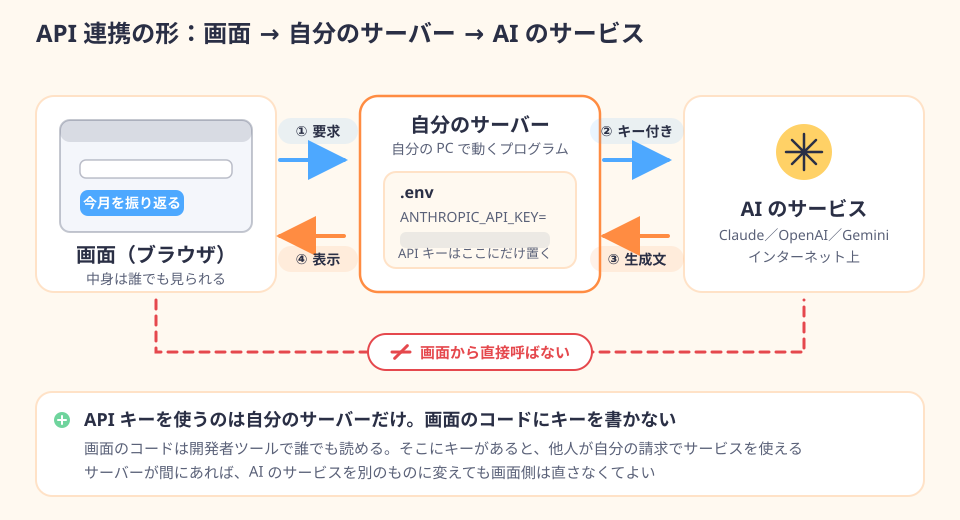
 用語
用語
- 画面側（フロントエンド）
- ブラウザの中で動く部分。HTML／CSS／JavaScript でできていて、その中身は開発者ツールで誰でも見られます。
- サーバー側（バックエンド）
- 利用者から見えない場所で動く部分。自分の PC で
node server.jsのように起動しているプログラムがこれに当たります。秘密の文字列を使う処理や、ファイルの読み書きはここで行います。 - 開発者ツール
- ブラウザに標準で付いている、画面の中身や通信の内容やエラーを調べる機能。Chrome では F12（Mac は ⌥⌘I）で開きます。
なぜサーバーを経由するのか
- AI のサービスを呼ぶには、次の節で扱う API キーが要ります。画面側のコードに書くと、開発者ツールで誰でもそのキーを読めます。読んだ人は、ご自身の請求でそのサービスを使い放題になります
- サーバー側に置いたキーは、ブラウザからは見えません。キーを使う処理は、必ず見えない場所に置きます
- 自分のサーバーを間にはさんでおくと、あとで AI のサービスを別のものに変えるときも、画面側は一切直さずに済みます
この回の流れ（上から順に進めます）
API を知る
呼び出しの形と、サーバー経由の理由
サービスを選ぶ
Claude／OpenAI／Gemini
キーを発行
管理画面で作り、.env に置く
土台を作る
いまの画面に、動きとサーバーを足す
経路を先に通す
AI を呼ばずに固定の文章を返す
AI に差し替え
サーバー側だけを直す
上限を設定
管理画面で使いすぎを止める
データの持ち方
4つの置き場から選ぶ
02
AI のサービスを選ぶ：Claude／OpenAI／Gemini
AI の API を提供しているサービスのうち、このゼミで扱うのは次の3つです。特定の1社を推奨はしません。3つとも「管理画面でキーを発行する → キーを .env に置く → サーバー側から呼ぶ」という同じ並びで使えるので、どれを選んでも以降の手順は変わりません。
| サービス | 提供元 | 管理画面の名前 | 開く場所 |
|---|---|---|---|
| Claude API | Anthropic | Claude Console（Claude Platform） | platform.claude.com |
| OpenAI API（ChatGPT と同じモデルを API で使う） | OpenAI | OpenAI Platform | platform.openai.com |
| Gemini API | Google AI Studio | aistudio.google.com |
表は横にスクロールできます
選ぶときに見る4つの観点
- 費用
- 見るところ無料で試せる範囲があるか。使った分だけの支払いか、前払いか
- なぜ作っている途中で何度も呼びます。試す段階で費用がかかると手が止まります
- 扱える入力
- 見るところ文章だけか、画像や PDF も渡せるか
- なぜ変換型で「写真から読み取る」ような機能を考えているなら、ここで決まります
- 上限設定
- 見るところ管理画面に「月にここまで」という上限を置けるか
- なぜ作りを間違えて何度も呼ばれたとき、被害を金額で止められます
- 日本語の出力
- 見るところ自分の用途の文章が自然に返ってくるか
- なぜ要約や言い換えは、日本語の品質がそのまま使いやすさになります
 用語
用語
- モデル
- 呼び出す AI の種類。同じサービスの中に、速いもの・賢いもの・安いものなど複数あり、名前を指定して呼び分けます。名前は変わることがあるので、公式ページで確認します。
- トークン
- AI のサービスが文章を数える単位。送った文章と返ってきた文章の両方がトークンで数えられ、料金はその数で決まります。日本語は1文字が1トークン以上になることが多いです。
- 無料枠
- 契約直後や一定量までは無料で使える範囲。あるかどうか、どこまでかはサービスごとに違い、変わることがあります。
- 上限設定
- サービスの管理画面で「月あたりここまで」と決めておく設定。超えると呼び出しが止まります。
なぜ推奨を置かないのか：料金も無料枠も短い期間で変わります。1社を推奨として固定すると、条件が変わったときに全員が不利な選択をしたままになります。観点を渡して、その時点でご自身に合うものを選べる状態にしておきます。
 選んだサービスは、この回の課題を出すときに一緒に書いてください。同じサービスの環境で見ないと、詰まったときに再現できず、講評ができません。迷ったら、ゼミで使っている Claude と同じ提供元の Claude API にすると、契約と使用量の管理画面が1つにまとまります。
選んだサービスは、この回の課題を出すときに一緒に書いてください。同じサービスの環境で見ないと、詰まったときに再現できず、講評ができません。迷ったら、ゼミで使っている Claude と同じ提供元の Claude API にすると、契約と使用量の管理画面が1つにまとまります。
03
API キー：パスワードと同じ扱いをする
API キーは、そのサービスに「自分として」アクセスするための長い文字列です。これを付けて要求を送ると、サービスは「この人からの要求」と判断し、使った分をその人に請求します。
 用語
用語
- API キー
- サービスが発行する、本人確認のための長い文字列。
sk-ant-…（Claude）、sk-…（OpenAI）、AIza…（Gemini）のような決まった文字で始まることが多いです（形式は変わることがあります）。 - .env
- API キーのような秘密の文字列を書いておくファイル。アプリのフォルダの直下に置きます。名前は「環境（environment）」の略です。
- 環境変数
- プログラムの外側から渡す設定値。
.envに書いた内容は、起動時に環境変数として読み込まれ、サーバー側のプログラムからprocess.env.ANTHROPIC_API_KEYのような名前で取り出せます。 - .gitignore
- 共有の場所に上げないファイルの名前を書いておく一覧。ここに
.envを書いておくと、コードを共有するときに.envだけが除かれます。
① 画面側のコード（HTML や JavaScript）に書く
② GitHub などコードを共有する場所に上げる
③ スクリーンショットに写ったまま提出する・掲示板に貼る
なぜ画面側に書いてはいけないのか：ブラウザで動くコードは、開発者ツールを開けば誰でも読めます。キーが読まれると、他人がご自身の請求でそのサービスを使い放題になります。キーは「使うと請求が来るパスワード」であって、設定値ではありません。
なぜスクリーンショットまで気にするのか：管理画面でキーを作った直後の画面や、.env を開いた画面をそのまま撮ると、キーの全文が写ります。掲示板や提出物に貼った時点で、見た人全員がそのキーを使えます。写ってしまったら、貼り直すのではなく、管理画面でそのキーを無効化して作り直します。
キーの置き方（この順で）
- 1
アプリのフォルダの直下に
.gitignoreがあるか確認し、無ければ作って.envの1行を書くなぜ先に .gitignore か：
.envを先に作ると、確認する前に共有の場所へ上がる事故が起きます。上げない設定を先に済ませてからキーを置きます。 - 2
.envを作り、ANTHROPIC_API_KEY=ここに発行したキーを貼るの形で1行書く=の前がプログラムから呼ぶときの名前、後ろが発行したキーです。引用符も空白も付けません。 - 3
サーバー側のプログラムからだけ読む
画面側からは読めないのが正しい状態です。
| サービス | .env に書く名前（例） | 公式の説明で確認するもの |
|---|---|---|
| Claude API | ANTHROPIC_API_KEY | キーの発行場所・モデル名・上限設定の場所 |
| OpenAI API | OPENAI_API_KEY | 同上 |
| Gemini API | GEMINI_API_KEY | 同上 |
表は横にスクロールできます
Claude Code に .env と .gitignore を用意させる指示の型です。そのまま貼って送ります。
APIキーを安全に置く準備をしてください。まだAIは呼びません。 1. アプリのフォルダ直下に .gitignore が無ければ作り、.env と node_modules の2行を入れてください（あれば追記） 2. .env.example というファイルを作り、ANTHROPIC_API_KEY= の1行だけ書いてください（値は空のまま） 3. .env そのものは作らないでください。私が自分で作ります 完成条件：.gitignore に .env が入っていること。.env.example があること。
なぜ .env は自分で作るのか：キーの文字列を Claude Code の入力欄に貼ると、やり取りの記録に残ります。キーはご自身の手でファイルに貼り、AI には「.env から読む」とだけ伝えます。
04
各サービスでキーを発行する
3つとも「ログイン → API キーの画面 → 作成 → 表示されたキーをその場で .env に貼る」の流れです。キーは作った直後にしか全文が表示されないサービスが多いです。画面を閉じる前に .env に貼り、貼れたことを確認してから閉じます。選んだサービスの節だけ読めば足ります。
4-1. Claude API（Anthropic）
- 1
platform.claude.com を開き、Google アカウントかメールアドレスでログインする
なぜ：API キーはアカウントに紐づきます。ゼミで使っている Claude のアカウントと同じものでログインすると、契約と使用量を1つの画面で見られます。
- 2
「使用クレジットを購入して開始する」が出たら、ここでは買わず「今はスキップ」
なぜ：キーを作って
.envに置く前に払うと、置き場の確認が後回しになります。買うのは経路が通ってからで間に合います。左のメニュー「組織の設定」→「API キー」を開きます。 - 3
「キーを作成」を押し、名前と有効期限を決めて「キーを作成」
途中で「ID 連携を使用すれば、API キーは不要です」という案内が出たら「API キーで続ける」を選びます（ID 連携はクラウド上で動かす場合の仕組みで、ご自身の PC で動かすアプリには使いません）。キーの全文が1回だけ表示されるので、その場で
.envに貼ります。 - 4
「請求」の画面でクレジットを購入する
Claude API は前払いで、買ったクレジットの範囲でしか使えません。なぜここが上限設定を兼ねるのか：前払いの残高が上限そのものになります。作りを間違えて何度も呼ばれても、残高が尽きたところで止まります。最初は少額で十分です。金額の選択肢は変わることがあります。
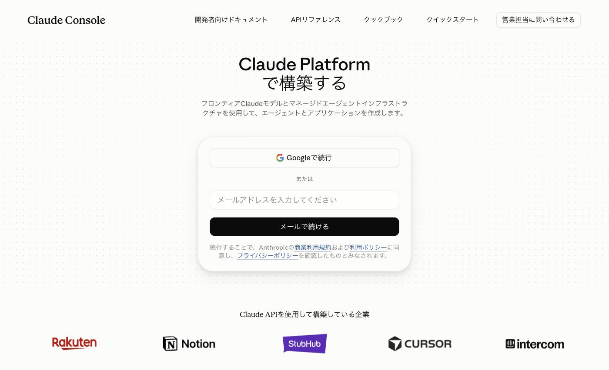
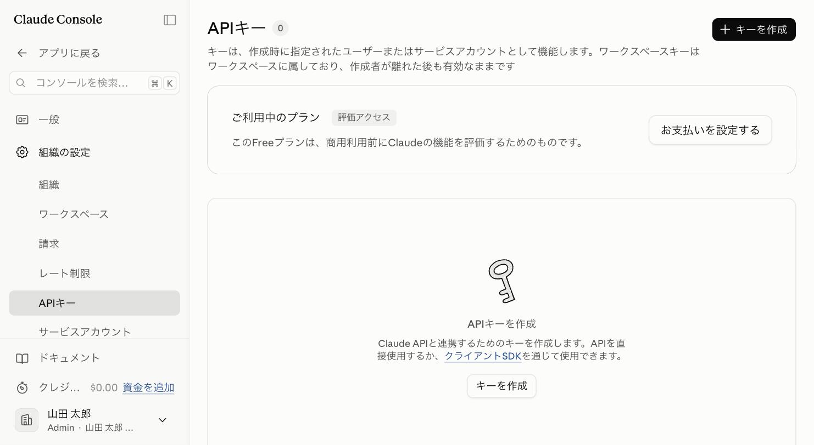
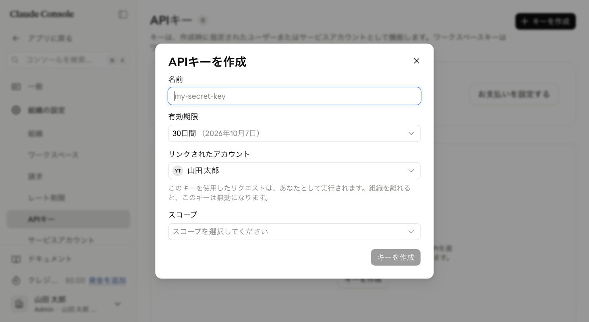
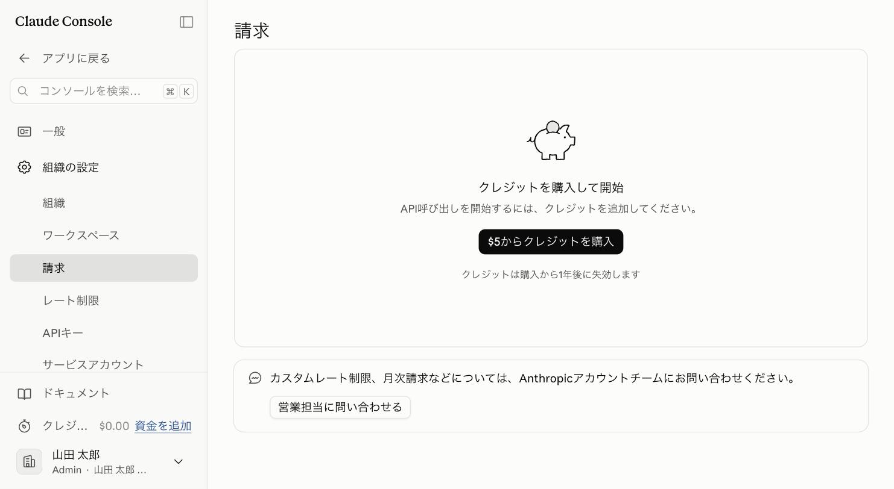
4-2. OpenAI API（OpenAI）
- 1
platform.openai.com を開き、ログインする
ChatGPT を使っているアカウントでログインできますが、ChatGPT の有料プランと API の契約は別で、API は使った分だけの支払いになります。なぜ確認するのか：ChatGPT の月額を払っていれば API も使えると思って作り始め、認証エラーで止まる人が多いためです。
- 2
左のメニュー「API Keys」→ 右上の「Create new secret key」
名前を付け、Permissions は「All」のまま「Create secret key」を押します。キーの全文が1回だけ表示されるので、その場で
.envに貼ります。 - 3
「Settings」→「Billing」で支払い方法を登録する
画面に「API credits are separate from ChatGPT」（API のクレジットは ChatGPT とは別）と書いてあるとおり、ChatGPT の契約とは別に、ここで API 用の残高を入れます。
- 4
「Billing」の「Usage limits」で月あたりの上限を設定する
支払い方法の登録後に設定できるようになります。「Limits」の画面には、1分あたりに送れる回数（レート制限）と、購入額に応じた段階（Tier）が出ます。
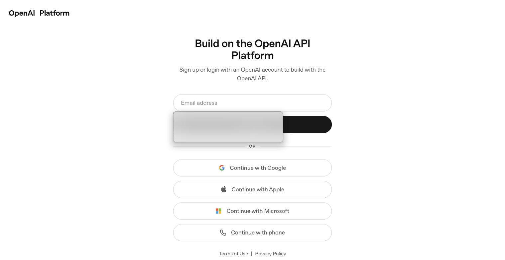
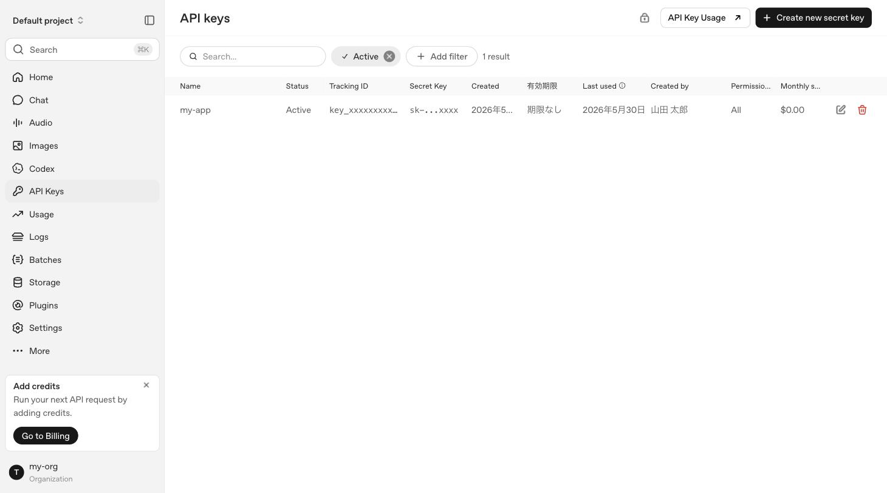
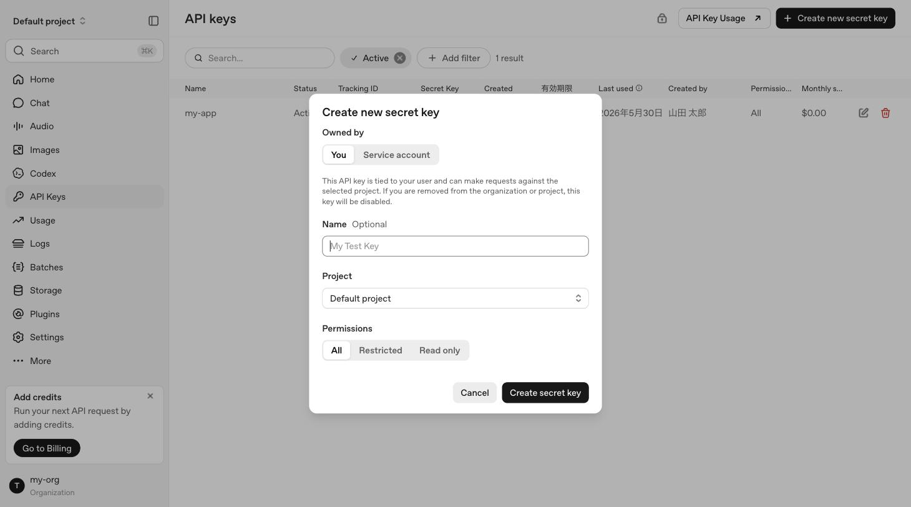
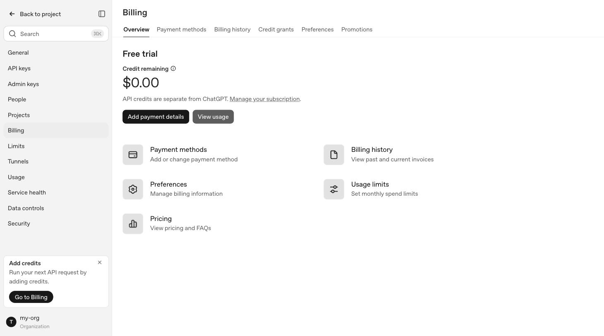
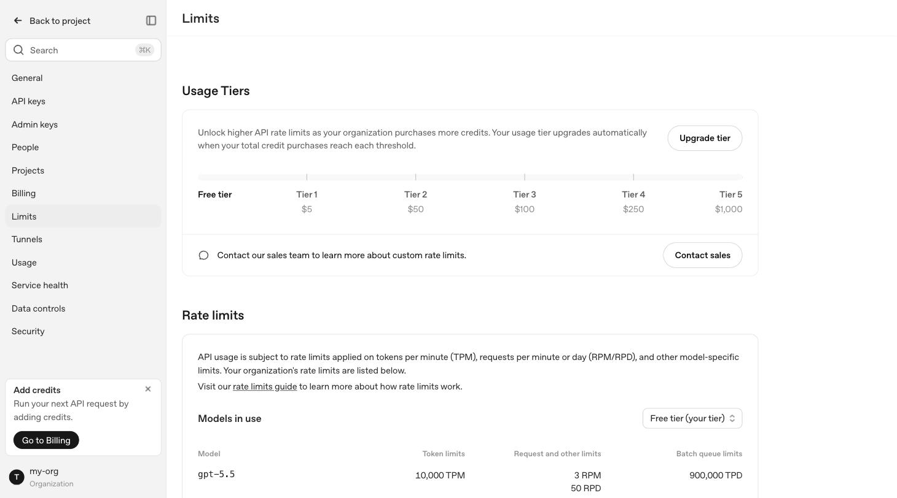
4-3. Gemini API（Google）
- 1
aistudio.google.com を開き、Google アカウントでログインする
左のメニューに「API キー」があります。
- 2
右上の「API キーを作成」を押し、名前とプロジェクトを決めて「キーを作成」
初めてなら用意されている「Default Gemini Project」のままで構いません。なぜプロジェクトを聞かれるのか：Google はキーや使用量を「プロジェクト」という単位で管理します。アプリ1つに1プロジェクトが基本ですが、まずは既定のもので進めて差し支えありません。表示されたキーはその場で
.envに貼ります。一覧に戻ると、作ったキーは末尾の数文字だけが表示されます。 - 3
左のメニュー「課金」で、支払い方法の設定を確認する
Gemini API は支払い方法を設定しなくても無料枠の範囲で使い始められます（範囲は変わることがあります。「レート制限」の画面で確認できます）。設定するときは、同時に上限も置きます。2026年9月24日時点で、新しく始める人に Google が勧めているモデルは
gemini-3.5-flash-liteです（無料枠で、講師のプロジェクトでは1日500回）。gemini-2.5-flashなどの 2.5 系は以前から使っていた人だけのものになり、新しく始める人が呼ぶと404で止まります。 - 4
「使用量」の画面で、要求の回数とエラーの回数を見る
AI 機能を入れたあと、この画面を1日1回は見る習慣を付けてください。なぜ：作りを間違えて何度も呼ばれている場合、ここの回数が想定と桁違いになります。請求が来てから気づくのでは遅いためです。
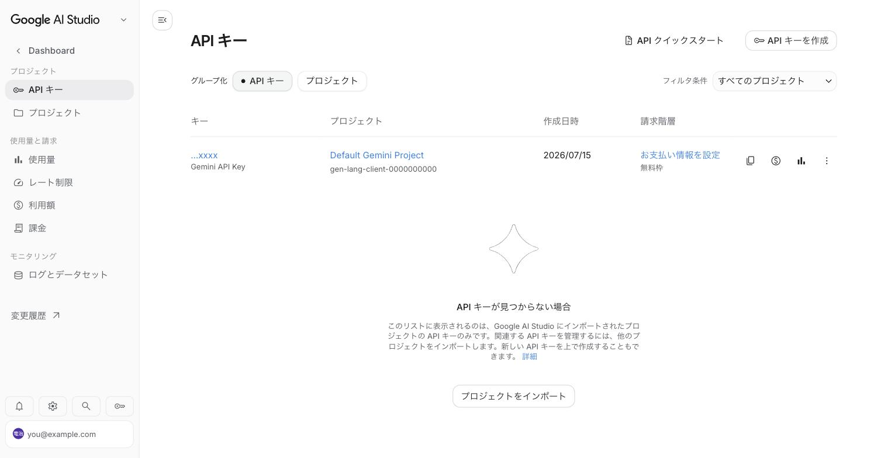
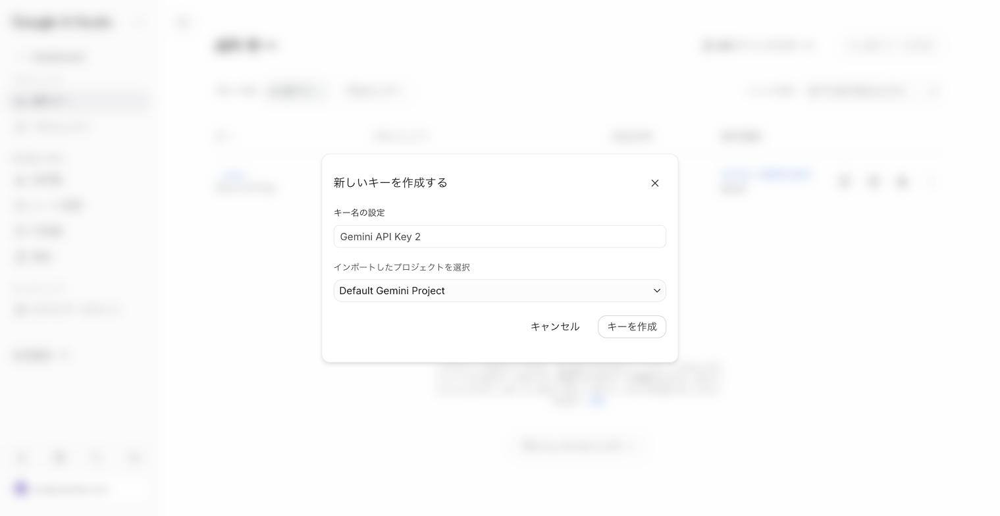
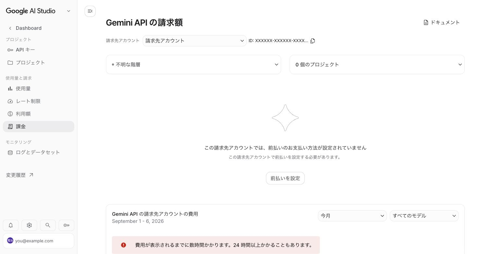
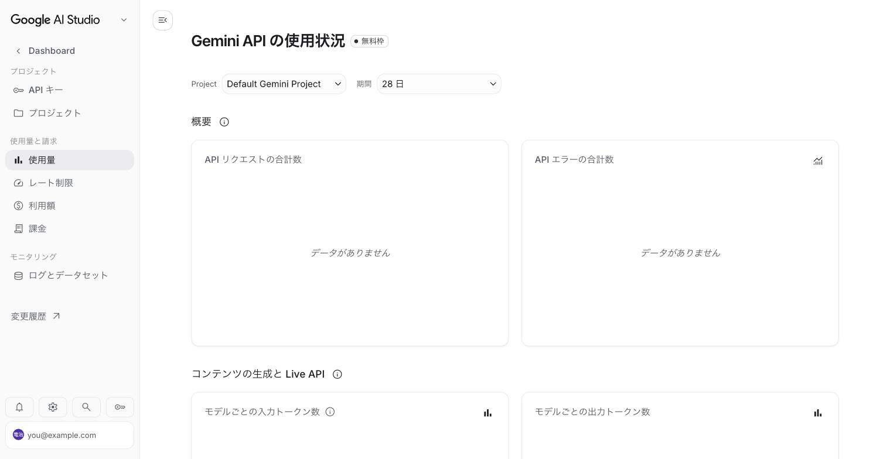
 用語
用語
- Google Cloud のプロジェクト
- Google のサービスで、キーや使用量や請求をまとめる単位。Gemini のキーはどれかのプロジェクトに属します。
- レート制限
- 短い時間に送れる要求の回数の上限。無料枠では1分あたりの回数が少なく設定されています。超えると一時的にエラーになります。
- 前払い（クレジット）
- 先に金額を入れておき、その範囲で使う方式。残高が尽きると呼び出しが止まるので、上限の役目を兼ねます。
05
AI 機能を入れる：経路を先に通してから、中身を差し替える
ここでやるのは「自分のアプリのサーバー側から AI のサービスに文章を送り、返ってきた文章を画面に出す」ことです。次の順番を崩さないでください。最初に、いまの画面に動きとサーバーを足して土台を作り（5-1）、そのうえで経路を通して AI に差し替えます（5-2）。
5-1. まず、いまの画面に動きとサーバーを足す
いまのアプリは、app/ の中の HTML と CSS だけでできていて、ボタンを押しても何も起きません（見た目だけの画面＝モック）。AI のサービスを呼ぶには、この画面に次の2つを足します。
- ボタンが押されたことを受け取って、画面を書き換えたり、要求を送ったりする部分（画面側の JavaScript）
- その要求を受け取って、外部のサービスを呼ぶ部分（サーバー側のプログラム）
アプリは「見た目 → 動き → 裏側」の順に1段ずつ足して作ります。見た目はもうできているので、ここで足すのは動きと裏側だけです。なぜ1段ずつか：一度に全部を作らせると、うまくいかないときに、見た目・動き・裏側のどこが原因か分かりません。1段足すたびに確かめておけば、先に調べるのは最後に足した1段で済みます。
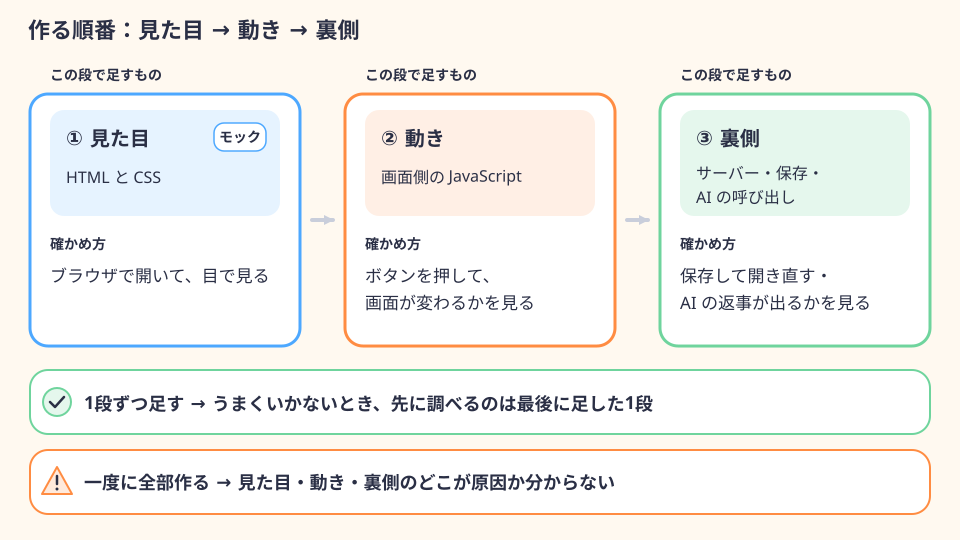
なぜ画面を作り直さないのか：いまある HTML と CSS は、ご自身で見て決めた配置と見た目そのものです。作り直させると配置も文言も変わり、確かめ直しになります。足すのは動きと処理だけで、画面のファイルは土台としてそのまま使います。仕様書の「使う技術」で、HTML をそのまま使わない構成（React など）を選んだ場合は、いまの画面の配置・文言・色・余白を変えずに、その構成の書き方へ移させます。
 用語
用語
- モック
- 見た目だけを作った画面。動きや保存の仕組みは入っていません。
- Node.js
- JavaScript をブラウザの外（PC の上）で動かすための土台のソフト。サーバー側のプログラムを動かすのに使います。
- localhost
- 自分の PC 自身を指す名前。
http://localhost:3000は「自分の PC の中で動いているサーバーの 3000 番の入口」の意味です。インターネットには公開されていません。 - ターミナル
- 文字で命令（コマンド）を打ち込み、結果を文字で受け取る画面。
手順A：サーバーを立てて、いまの画面をそのまま出す
- 1
Node.js が入っているかを Claude Code に聞く
「この PC に Node.js が入っているか確かめてください。入っていなければ、入れ方を教えてください」と送ります。入っていなければ、公式サイト（nodejs.org）の案内に従って入れます。画面の文言は変わることがあります。なぜ：サーバー側のプログラムは Node.js の上で動きます。入っていないと、次の指示で作ったサーバーを起動できません。
- 2
次の指示を送る
下の指示の型を、そのまま貼って送ります。
なぜ「同じ見た目で出ること」を完成条件にするのか：ファイルの置き場所や読み込み方が変わると、style.css が読み込まれず、色が消えることがあります。ここで気づけば、直すのは1か所で済みます。
確認：ブラウザのアドレス欄が、ファイルの場所ではなく http://localhost:3000 のような形になっています。ここから先は、HTML ファイルをダブルクリックして開くのではなく、サーバーを起動してこのアドレスで開きます（なぜ：ファイルを直接開いた画面からは、自分のサーバーに要求を送れません）。
手順B：動きを1つだけ足す
ご自身のアプリの中心になる操作を1つだけ、画面側の JavaScript で動くようにします。保存はまだしません。
（ ）の中は、ご自身のアプリの型に合わせて書き換えます。
| 型 | 足す動きの例 |
|---|---|
| 記録型 | 「保存」を押すと、入力欄の内容が一覧のいちばん上に1行増える |
| 変換型 | 「変換」を押すと、結果の欄に「（ここに結果が入ります）」という決まった文章が出る |
| 相談型 | 「送信」を押すと、入力した文がやり取りの欄のいちばん下に増え、入力欄が空になる |
表は横にスクロールできます
なぜ保存より先に動きだけを足すのか：保存まで一度に作らせると、一覧に出ないときに、画面の書き換えが悪いのか、保存が悪いのかが分かりません。まず画面の中だけで動くことを確かめておけば、あとで保存を足してうまくいかないとき、調べるのは保存の側だけで済みます。データをどこに残すかは、この回の最後の「データの持ち方」で、置き場ごとの違いを知ってから決めます。
5-2. 経路を先に通してから、AI に差し替える
| 順 | やること | なぜこの順か |
|---|---|---|
| 1 | サービスを決めて、キーを発行する（前の節） | 3つとも同じ並びです |
| 2 | .gitignore に .env を入れてから、キーを .env に置く（API キーの節） | 置く前に、上げない設定を確認します。先に置くと、確認する前に共有の場所へ上がる事故が起きます |
| 3 | AI を呼ばずに、決まった文章を返すだけのサーバー側の処理を作り、画面から呼んで表示させる | ここがいちばん大事です。画面 → サーバー → 画面の経路を先に1本通しておきます。同時に作ると、動かないときに経路の問題なのか AI 呼び出しの問題なのか切り分けられません。原因が2つある状態で詰まると、ほぼ抜けられません |
| 4 | その処理の中身を、AI の呼び出しに差し替える | 経路が通っていることが分かっているので、うまくいかなければ原因は AI の呼び出し側に絞られます |
| 5 | 返ってきた内容を画面に出す。同時に、待機中の表示と失敗したときの表示も入れる | 応答は数秒かかります。何も出ないと壊れたと思われ、何度も押される＝そのたびに課金されます |
| 6 | 管理画面で上限を設定し、スクリーンショットを撮る | この回の提出物です。作りを間違えたとき、被害が金額で止まります |
表は横にスクロールできます
例：食費メモ（記録型）に「今月の食費をひとことで振り返る」ボタンを足す
手順3の指示です。AI はまだ呼びません。（ ）の中はご自身のアプリの機能に合わせて書き換えます。
確認：ボタンを押して「テスト応答です」が出れば経路が通っています。開発者ツールの「ネットワーク」の欄で、自分のサーバーへの要求が1回だけ送られていることも見ておきます。なぜ：ここで2回以上送られていると、AI に差し替えたあと、押すたびに2回課金されます。
手順4の指示です。使うサービスとキーの名前を、ご自身が選んだものに読み替えます。
OpenAI なら「使うサービスは OpenAI API、キーは OPENAI_API_KEY」、Gemini なら「Gemini API、キーは GEMINI_API_KEY」に読み替えます。それ以外の文面は同じで構いません。
Gemini を選んだ方は、モデル名の行を「モデルは gemini-3.5-flash-lite を使い、コードの中の1箇所にまとめてください」に書き換えます。なぜ：2026年9月24日時点で、gemini-2.5-flash などの 2.5 系は、新しく始める人が呼ぶと 404（no longer available to new users）で止まります。Claude Code が 2.5 系の名前を書くことがあるので、最初から名前を渡しておきます。あわせて「Google の新しいライブラリ（JavaScript は @google/genai、Python は google-genai）を使ってください」と添えると確実です（古いライブラリは 2025年11月30日に非推奨になりました）。
なぜ「モデル名を1箇所にまとめて」と書くのか：モデル名は変わります。変わったときに直す場所が1つなら、ご自身で直せます。あちこちに書かれていると、直し漏れで一部の機能だけ動かなくなります。
手順5の指示です。待機中の表示と、失敗したときの表示を足します。
なぜ「ボタンを押せなくする」のか：応答が返るまでの数秒間、何も起きないと利用者はもう一度押します。押した回数だけ AI が呼ばれ、そのたびに課金されます。押せなくしておけば、この事故は起きません。
なぜエラーの詳しい内容を画面に出さないのか：エラーの文章には、サーバーの内部の情報（ファイルの場所や、場合によってはキーの一部）が含まれることがあります。画面に出すのは利用者向けの短い文章だけにし、原因を調べるための情報はターミナルに出します。
 用語
用語
- 公式のライブラリ
- 各サービスが配布している、API を呼ぶためのプログラムの部品。これを使うと、要求の形やエラーの扱いをご自身で書かずに済みます。
- ネットワークの欄
- 開発者ツールの中で、ブラウザが送った要求と返ってきた答えを一覧で見られる画面。要求の回数と送り先が分かります。
- 待機中の表示
- 処理が終わるまでの間、進行中であることを画面に出すこと。ローディング表示とも呼びます。
接続でよく出るエラーと対処
| 症状 | 原因 | 対処 |
|---|---|---|
認証エラー（401 や authentication を含む文言）が返る | キーが読み込まれていない／文字列が違う | .env の場所（アプリのフォルダ直下）と名前を確認。.env を作ったり直したりしたあとは、開発サーバーを起動し直します（起動時にしか読み込まれません） |
| 支払い方法が登録されていない、残高が無い、と言われる | 未登録・未入金 | 管理画面で登録し、同時に上限も設定します |
短時間に何度も呼んで制限がかかる（429 や rate limit） | 画面の再描画のたびに呼び出している／連打 | 「ボタンを押したときだけ呼ぶように」と指示します。課金にも直結するので必ず直します |
| 応答が返る前に止まる | 待ち時間の上限に達している | 送る文章を短くします。長い入力を分けて渡します |
モデル名が違う・見つからないと言われる（404 や model not found） | モデル名は変わる | 公式ページで現在の名前を確認し、まとめてある1箇所を直します。Gemini で no longer available to new users と出たときは、新しく始める人は使えない 2.5 系を呼んでいます。gemini-3.5-flash-lite に直します（2026年9月24日時点） |
画面側でキーが読めない（undefined になる） | キーを画面側から使おうとしている | 画面側からは読めないのが正しい状態です。サーバー側の処理から使います |
表は横にスクロールできます
入れる AI 機能は1つだけ
型ごとの例：要約（変換型）／記録の振り返り・傾向の指摘（記録型）／やり取りの続きを返す（相談型）。
なぜ1つだけなのか：AI 機能は「動くかどうか」より「出力が期待どおりか」の調整に時間がかかります。2つ以上入れると、どちらも中途半端なまま残ります。1つが期待どおりに動いてから、次を足します。
出力が毎回変わることへの対処
- 出力の形式を指定します。「3行以内」「見出しを付けない」「箇条書き3つ」のように、指示文に形を書きます。形式が毎回違うと、画面の決まった場所に入れられず表示が崩れます
- 形式が守られなかったときの表示を用意します。長すぎたら途中で切る、空なら「結果を作れませんでした」と出す、のように決めておきます
- 同じ入力でも毎回少し違う文章が返ることを前提にします。「正解と一字一句同じか」で確認するのではなく、「形式が守られているか」「内容が入力に基づいているか」で確認します
AI に送ってよい情報の実物確認
要件定義のときに確認した「社外に出せない情報」を、実際に送る直前にもう一度確認します。なぜ2度確認するのか：要件定義の時点では紙の上で決めただけで、外に出る処理はまだ1つも無かったからです。実際にご自身の PC の外へデータが出るのは、この回が最初です。それまでに保存した項目が、企画時の想定より増えていることも多いです。送る内容を Claude Code に一覧させて（「AI に送っている項目を全部挙げてください」）、目で確認します。
06
データの持ち方：4つの置き場と、消える条件
ここまでのアプリは、データを画面の中に持っているだけで、再読み込みすると消えます。AI 機能が動いたら、次は「このデータをどこに置いておくか」をご自身で決めます。置き場によって、消える条件と、どこから見えるかと、設定の手間が違います。
 用語
用語
- 消える条件
- その置き場に入れたデータが無くなる操作や状況。置き場を選ぶときの最初の観点です。
- 永続化
- ブラウザを閉じても、PC を再起動しても残るように保存すること。「画面の中に持っている」状態は永続化されていません。
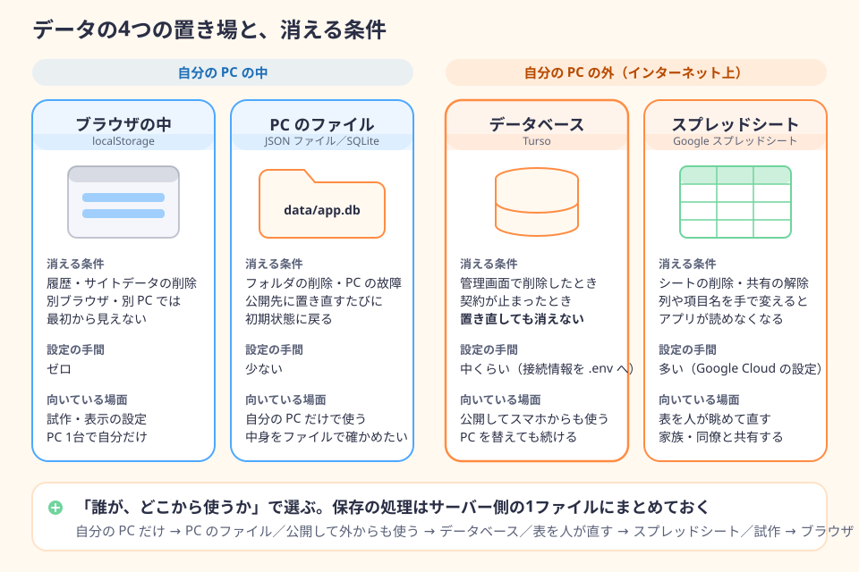
6-1. ブラウザの中に持つ（localStorage）
ブラウザには、サイトごとに小さなデータを保存しておく領域があり、その1つが localStorage です。JavaScript から「名前」と「文字列」の組で読み書きでき、ブラウザを閉じても残ります。サーバーが無くても動くので、画面側だけで完結します。
 用語
用語
- localStorage
- ブラウザがサイトごとに持っている保存領域。名前と文字列の組を保存します。容量は数 MB 程度で、同じ PC の同じブラウザからだけ読めます。
- キャッシュ
- 表示を速くするために、ブラウザが画像やファイルの写しを一時的に持っておく仕組み。いつ消されてもよい前提のものなので、データの保存には使いません。localStorage はキャッシュとは別の、消されない前提の領域です。
- どこにあるか
- 自分の PC の、そのブラウザの中
- 消える条件
- ブラウザの「閲覧履歴データの削除」でサイトデータを消したとき。別のブラウザ・別の PC・シークレットウィンドウでは最初から見えません
- 設定の手間
- ゼロ。Claude Code に「localStorage に保存して」と言えば動きます
- 向いている場面
- 試作／表示の設定（並び順・テーマ）／PC 1台・ブラウザ1つで自分だけが使う小さな記録
なぜ本番の記録には向かないのか：「履歴を削除」の操作で、貯めた記録がまとめて消えます。使う人はそれが記録の削除だとは思っていません。また、スマホから見たいと思ったときに、PC のブラウザの中にあるデータは取り出せません。
6-2. 自分の PC のファイルに持つ（JSON ファイル／SQLite）
サーバー側のプログラムが、アプリのフォルダの中のファイルにデータを読み書きします。ファイルの形は、JSON ファイル1つ（data.json）か、SQLite のファイル1つ（data.db）です。
 用語
用語
- SQLite
- データを1つのファイルに表の形で保存する仕組み。検索や並べ替えを SQL という決まった書き方で頼めます。別のプログラムを起動しておく必要がありません。
- SQL
- データベースに「この条件の行を取り出して」「この行を書き換えて」と頼むための、決まった書き方の文。
- バックアップ
- データの写しを別の場所に取っておくこと。ファイルに持っている場合は、そのファイルをコピーするだけで済みます。
- どこにあるか
- 自分の PC の、アプリのフォルダの中（
data/などに置く） - 消える条件
- そのファイルやフォルダを消したとき／PC が壊れたとき／アプリをインターネット上のサービスに公開した場合、置き直すたびにファイルが初期状態に戻ることが多い
- 設定の手間
- 少ない。Node.js の標準機能か、SQLite の部品を1つ入れるだけ
- 向いている場面
- 自分の PC だけで使うアプリ／中身をファイルとして開いて確かめたい／バックアップをコピーで済ませたい
なぜ公開すると消えるのか：アプリを動かしてくれる公開用のサービスの多くは、コードを置き直す（デプロイする）たびに、動かす場所をまっさらな状態から作り直します。その中に作ったファイルは、次の置き直しで無くなります。外からも使いたいアプリのデータは、アプリ本体とは別の場所（次の 6-3）に置く必要があります。
JSON ファイルと SQLite のどちらか：件数が少なく項目が単純なら JSON ファイルで足ります。件数が増えて「先月の分だけ」「金額の多い順」のような絞り込みや並べ替えを頻繁にするなら SQLite です。あとで 6-3 のデータベースに移す予定があるなら、最初から SQLite にしておくと、書き方がそのまま使えます。
なぜ data/ を .gitignore に入れるのか：記録の中身はご自身の生活や仕事のデータで、コードと一緒に共有する場所へ上げるものではないからです。
6-3. インターネット上のデータベースに持つ（Turso）
データベースは、データを表の形で保存し、検索・並べ替え・書き換えを専門に担当するプログラムです。Turso は、6-2 で使った SQLite をインターネット上で動かしてくれるサービスで、自分のサーバーからは接続用の URL とトークンを使ってつなぎます。
 用語
用語
- データベース（DB）
- データを表の形で保存し、検索・並べ替え・書き換えを担当する専用のプログラム。アプリ本体とは別の場所に置けます。
- Turso
- SQLite をインターネット上のサービスとして提供しているもの。手元の SQLite と同じ SQL がそのまま使えます。
- 接続情報
- データベースにつなぐための「場所（URL）」と「本人確認のトークン」。API キーと同じく
.envに置き、サーバー側からだけ使います。 - デプロイ
- 作ったアプリを、インターネット上の公開用のサービスに置いて動かすこと。
- どこにあるか
- Turso のサーバー（自分の PC の外）
- 消える条件
- Turso の管理画面でデータベースを消したとき／契約が止まったとき。アプリを置き直しても消えません。PC を替えても同じデータを見られます
- 設定の手間
- 中くらい。Turso のアカウント作成 → データベース作成 → 接続情報を
.envへ → サーバー側の接続先を変更 - 向いている場面
- アプリを公開してスマホからも使う／PC を替えてもデータを引き継ぐ／件数が増える見込み
なぜ Turso なのか（ほかの選択肢と、なぜ今回それを選ばないか）
- 手元の SQLite と同じ SQL がそのまま使えます。6-2 で SQLite にしておけば、変えるのは接続先の数行だけで、保存・読み出しの処理は書き直さなくて済みます
- Supabase や Firebase のような、画面側から直接データベースにつなげる作りのサービスもあります。便利ですが、アクセス制限の設定を1つ誤ると、データが誰からでも読める状態になります。このゼミでは「データベースにつなぐのはサーバー側だけ」に統一し、その形が自然に取れる Turso にします
- 無料で使える範囲がありますが、内容は変わることがあります。最新は Turso の公式ページでご確認ください
手順
- 1
app.turso.tech を開き、GitHub か Google のアカウントでログインする
アカウントが無ければ Sign up から作ります。
- 2
左上の「Create Database」を押し、名前を付けて「Create Database」
名前はアプリ名と同じにしておくと迷いません。Group は用意されている「default」のままで構いません。なぜ：Group はデータベースを置く地域のまとまりで、既定のものが Tokyo になっています。近い地域のほうが応答が速いためです。
- 3
作ったデータベースの名前を押して「Overview」を開き、「Connect」の枠の接続用 URL（Database URL）をコピーして
.envに貼る - 4
同じ枠の「Create Token」を押し、有効期限と権限（Read & Write）を選んで「Create Token」
表示されたトークンを
.envに貼ります。トークンは API キーと同じ扱いです。なぜトークンか：URL を知っているだけでは接続できないようにするためです。URL とトークンの両方が揃って初めてつながります。 - 5
.envにTURSO_DATABASE_URL=ここに接続用のURLを貼るとTURSO_AUTH_TOKEN=ここにトークンを貼るの2行を足す名前は例です。公式の案内に合わせます。
- 6
Claude Code に、サーバー側の接続先を手元の SQLite から Turso に切り替えさせる
下の指示の型を貼ります。
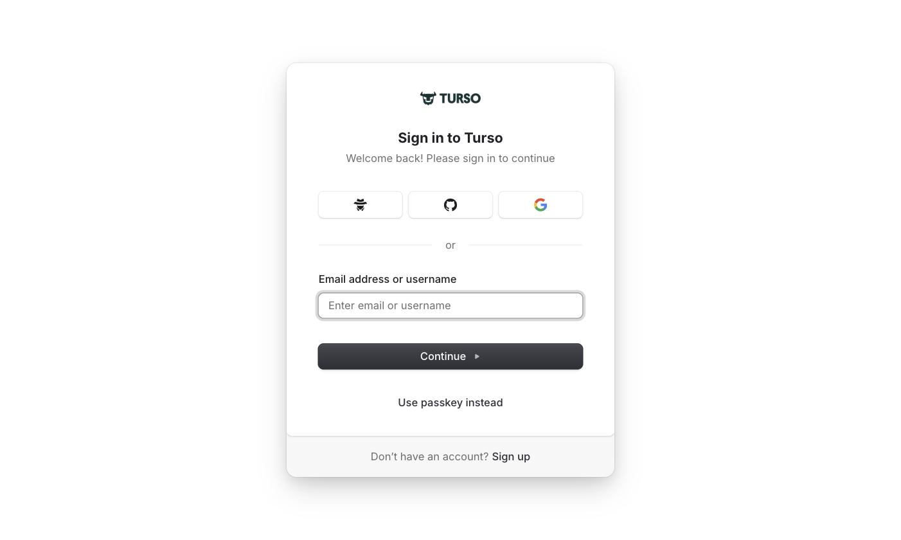
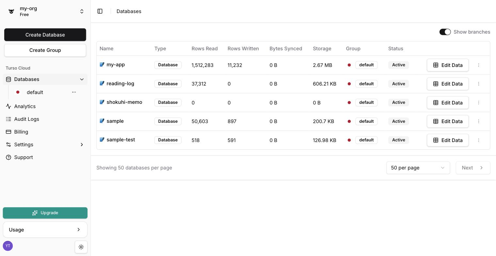
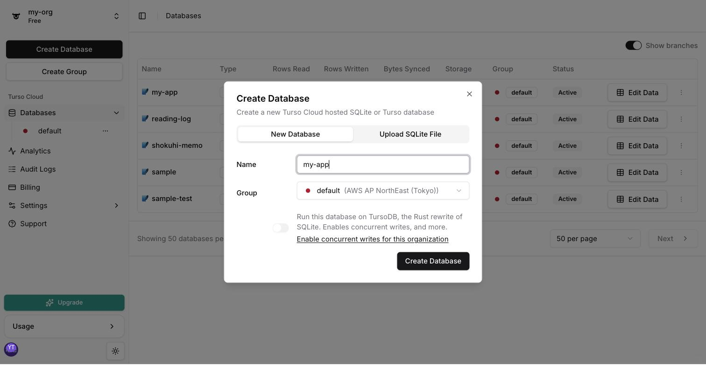
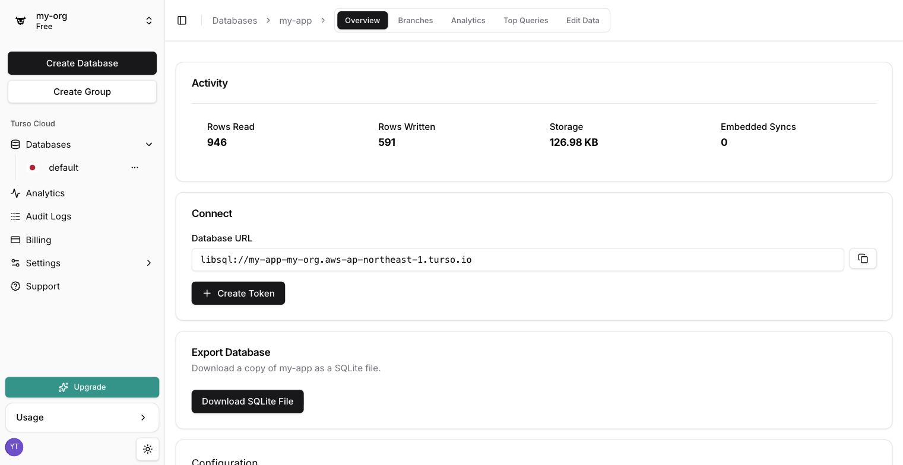
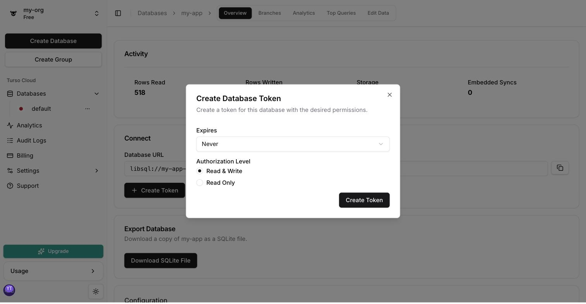
確認：データベースの画面の「Edit Data」を開くと、保存した表の中身を直接見られます。アプリで1件登録して、ここでその行が見えれば、PC の外に保存されています。
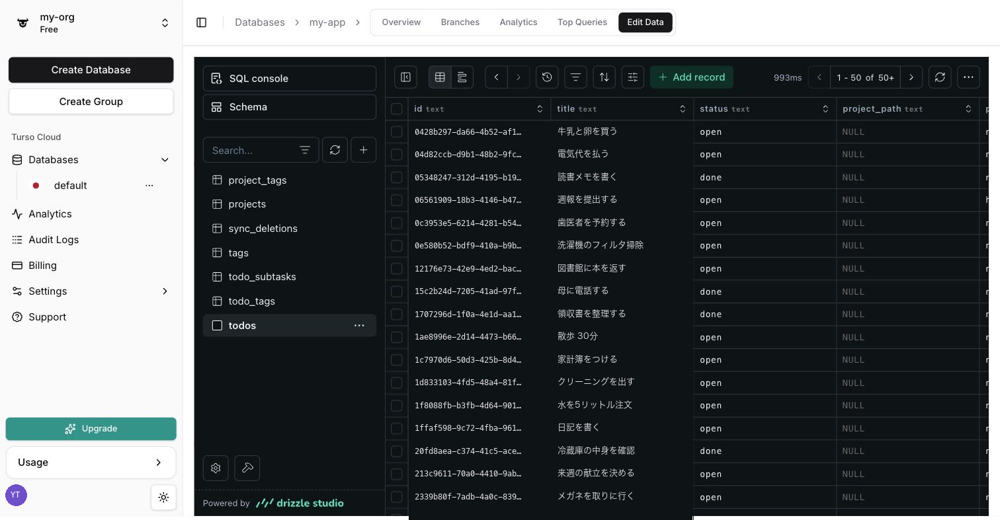
6-4. スプレッドシートに持つ（Google スプレッドシート）
データを Google スプレッドシートの表に持ち、サーバー側から Google の API を通して読み書きします。1行が1件、1行目が項目名という形にします。
 用語
用語
- Google スプレッドシート
- Google が提供している、ブラウザで使う表計算のサービス。Excel と同じような表を、インターネット上に持ちます。
- サービスアカウント
- 人ではなくプログラムが Google のサービスを使うための専用アカウント。Google Cloud の管理画面で作り、認証用のファイル（JSON）を受け取ります。このファイルも API キーと同じ扱いで、共有の場所に上げません。
- CSV
- 表の中身をカンマ区切りの文字で書き出したファイル。スプレッドシートや Excel で開けます。
- どこにあるか
- Google のサーバー（自分の Google ドライブの中）
- 消える条件
- シートを消したとき／サービスアカウントとの共有を外したとき／列の並びや項目名を手で変えたとき（アプリが読めなくなります）
- 設定の手間
- 多い。Google Cloud でプロジェクトとサービスアカウントを作る → 認証用のファイルを受け取る → シートをそのアカウントに共有する → サーバー側で API を呼ぶ
- 向いている場面
- 一覧を人が眺めて手で直したい／すでにスプレッドシートで管理している作業の続き／家族や同僚と同じ表を見たい
なぜスプレッドシートが選ばれるのか：アプリを作る前からスプレッドシートで管理していた作業なら、これまでの表をそのまま使えます。表を眺めて直すのは、専用の画面を作るより速いです。集計やグラフも、スプレッドシート側の機能で済みます。
なぜ本番のデータベースの代わりにはならないのか
- 読み書きのたびに Google の API へ通信するので、1回の操作に時間がかかります（体感で分かる程度）
- 短時間に何度も書き込むと回数の上限に当たります
- 人が表を直接編集できるのが利点でもあり、列を1つ動かしただけでアプリが読めなくなる弱点でもあります
6-5. 4つの比較と、選び方
| 置き場 | どこにあるか | 消える条件 | 設定の手間 | 向いている場面 |
|---|---|---|---|---|
| ブラウザの中（localStorage） | 自分の PC のブラウザ | 履歴削除／別ブラウザ・別 PC では見えない | ゼロ | 試作・設定値・PC 1台で自分だけ |
| PC のファイル（JSON／SQLite） | アプリのフォルダ | フォルダ削除／PC 故障／公開先で置き直すと初期化 | 少ない | 自分の PC だけで使う |
| データベース（Turso） | インターネット上 | 管理画面で削除／契約停止 | 中くらい | 公開してスマホからも使う・PC を替える |
| スプレッドシート | Google ドライブ | シート削除／共有解除／列の手直し | 多い | 表を人が眺めて直す・共有 |
表は横にスクロールできます
選び方：まず「誰が、どこから使うか」で決めます。
- 自分の PC だけで使う → PC のファイル。SQLite にしておけば、あとで Turso に移せます
- 公開して外からも使う、PC を替えても続ける → Turso
- 表を人が直接眺めて直す、家族と共有する → スプレッドシート（まずは CSV 書き出しで足りないかを考えます）
- 試作や、並び順のような表示の設定だけ → localStorage
決めたら docs/spec.md の「使う技術」の「保存の仕組み」の行を書き換えます（Claude Code に「docs/spec.md の保存の仕組みを Turso に書き換えてください」と指示すれば済みます）。なぜ：仕様書と実物がずれたままだと、次に Claude Code に指示したとき、古い保存先の前提でコードが作られます。
Deliverables
この回で作るもの
終わったとき、手元に次の4つがある状態にします。この回の課題の内容は commmune のゼミスレッドでご案内し、提出は「ゼミ参加者向け 事前課題提出受付フォーム」から開催3日前までにお願いします（Home の「ゼミのルール・修了要件」）。演習サイト Boarding Pass の理解度チェックもあります。
 用語
用語
- commmune
- DMM 生成AI CAMP の受講生向けコミュニティサイト。ゼミごとのスレッドで課題や連絡を案内します。
AI 機能（1つ）が動いている自分のアプリ
入力と出力の両方が見えるスクリーンショットと、ソース一式（.env は含めません）。使ったサービスの名前も書きます。
管理画面の上限設定のスクリーンショット
Claude は「請求」のクレジット残高、OpenAI は「Usage limits」、Gemini は「課金」の画面。キーの全文が写っていないことを見てから撮ります。
.gitignore に .env が入っていることが分かるスクリーンショット
.gitignore を開いた画面。.env と node_modules の行が見えていれば十分です。
データの置き場を決めて書き換えた docs/spec.md
「使う技術」の「保存の仕組み」の行が、選んだ置き場になっている状態。選んだ理由を1行、ご自身の言葉で添えます。
Pitfalls
よくあるつまずきと対処
詰まったら、Home の「分からないことが出てきたらこの順番で」の順（スクショを撮って AI に聞く → ゼミ掲示板）で進めてください。スクショを撮るときは、キーが写っていないかを先に見ます。
キーが漏れた（画面側に書いた・共有に上げた・スクショに写した）
他人がご自身の請求で使い放題になります。
対処：貼り直さず、管理画面でそのキーを無効化して作り直します。.gitignore を先に置く順番に戻します。
課金が膨らんでいる
再描画のたびに呼ぶ作りや連打で、回数が桁違いになっています。
対処：上限設定を先に確認。「ボタンを押したときだけ呼ぶ」「押している間は押せなくする」を指示します。使用量の画面を毎日見ます。
経路を先に通す手順を飛ばした
動かないとき、原因が経路か AI かの2つあって抜けられません。
対処：いったん「テスト応答です」を返す状態に戻して経路を確かめ、通ってから差し替え直します。
契約・支払い登録で止まる
この回の作業に入れません。
対処：契約〜キーの発行は LIVE講義の前に済ませておきます。詰まったらスクショ（キーは伏せる）を撮って AI に聞く → ゼミ掲示板の順で。
ChatGPT の有料プランで API も使えると思っていた
認証エラーで止まります。
対処：API は別契約です。OpenAI Platform の「Billing」で API 用の残高を入れます。
.env を直したのに反映されない
認証エラーが続きます。
対処：開発サーバーを止めて起動し直します（.env は起動時にしか読まれません）。
モデル名のエラーが出る
404 や model not found が返ります。
対処：公式ページで現在の名前を確認し、1箇所にまとめた場所を直します。Gemini で no longer available to new users と出たときは 2.5 系を呼んでいるので、gemini-3.5-flash-lite に直します（2026年9月24日時点）。
出力が毎回違う
表示が崩れる・合っているか確認できません。
対処：形式を指示文で指定し、守られなかったときの表示を用意します。「形式が守られているか」で確認します。
localStorage に本番の記録を貯めてしまった
履歴削除で消える・スマホから見えません。
対処：6-2 か 6-3 に移します。保存の処理がサーバー側の1ファイルにまとまっていれば、直す場所は1つです。
公開したら記録が消えた
公開先で置き直すたびにファイルが初期化されています。
対処：データはアプリ本体と別の場所（Turso）へ移します。
スプレッドシートの列を手で動かしてアプリが読めなくなった
一覧が空になる・エラーになります。
対処：1行目の項目名と列の並びは変えません。変えるなら仕様書を直して Claude Code に読み直させます。
社外に出せない情報を AI に送っていた
情報の持ち出しになります。
対処：送る項目を Claude Code に一覧させて確認します。開発中は架空のデータで進めます。
Glossary
この回で出てきた用語
| 用語 | 意味 |
|---|---|
| API | Application Programming Interface の頭文字。プログラムから別のプログラムやサービスの機能を呼び出すための、決められた呼び出し方 |
| API 連携 | 自分のアプリの中から外部サービスの API を呼び出して、その結果を自分の画面に使うこと |
| リクエスト／レスポンス | API に送る要求と、返ってくる答え |
| URL | インターネット上の場所を表す文字列。API では要求の送り先 |
| JSON | データを決まった書き方の文字で表す形式。項目名と値の組で書く |
| 画面側（フロントエンド） | ブラウザの中で動く部分。中身は開発者ツールで誰でも見られる |
| サーバー側（バックエンド） | 利用者から見えない場所で動く部分。秘密の文字列を使う処理とファイルの読み書きはここで行う |
| 開発者ツール | ブラウザに標準で付いている、画面の中身・通信・エラーを調べる機能 |
| ネットワークの欄 | 開発者ツールの中で、ブラウザが送った要求と答えを一覧で見られる画面 |
| API キー | サービスが発行する本人確認用の長い文字列。使うと請求が来るパスワード |
| .env | 秘密の文字列を書いておくファイル。アプリのフォルダ直下に置き、.gitignore に入れる |
| 環境変数 | プログラムの外側から渡す設定値。.env の内容は起動時に環境変数として読み込まれる |
| .gitignore | 共有の場所に上げないファイルの名前を書いておく一覧 |
| モデル | 呼び出す AI の種類。名前を指定して呼び分ける。名前は変わる |
| トークン（AI の） | AI のサービスが文章を数える単位。料金の元になる |
| 無料枠 | 無料で使える範囲。サービスごとに違い、変わる |
| 上限設定 | 管理画面で「月あたりここまで」と決めておく設定 |
| レート制限 | 短い時間に送れる要求の回数の上限 |
| 前払い（クレジット） | 先に金額を入れておき、その範囲で使う方式。残高が上限を兼ねる |
| Google Cloud のプロジェクト | Google のサービスで、キー・使用量・請求をまとめる単位 |
| モック | 見た目だけを作った画面。動きや保存の仕組みは入っていない |
| Node.js | JavaScript をブラウザの外（PC の上）で動かすための土台のソフト。サーバー側のプログラムを動かすのに使う |
| localhost | 自分の PC 自身を指す名前。http://localhost:3000 は自分の PC の中で動いているサーバーの 3000 番の入口を表す |
| 公式のライブラリ | 各サービスが配布している、API を呼ぶためのプログラムの部品 |
| 待機中の表示 | 処理が終わるまで進行中であることを画面に出すこと |
| ターミナル | 文字で PC に命令する画面。開発サーバーのメッセージやエラーが出る |
| 消える条件 | その置き場のデータが無くなる操作や状況 |
| 永続化 | ブラウザを閉じても PC を再起動しても残るように保存すること |
| localStorage | ブラウザがサイトごとに持つ保存領域。同じ PC の同じブラウザからだけ読める |
| キャッシュ | 表示を速くするための一時的な写し。いつ消されてもよい前提なので保存には使わない |
| SQLite | データを1つのファイルに表の形で保存する仕組み |
| SQL | データベースに取り出し・書き換えを頼む決まった書き方の文 |
| バックアップ | データの写しを別の場所に取っておくこと |
| データベース（DB） | データを表の形で保存し、検索・並べ替え・書き換えを担当する専用のプログラム |
| Turso | SQLite をインターネット上のサービスとして提供しているもの |
| 接続情報 | データベースにつなぐための URL とトークン。.env に置く |
| デプロイ | 作ったアプリを公開用のサービスに置いて動かすこと |
| Google スプレッドシート | ブラウザで使う表計算のサービス |
| サービスアカウント | プログラムが Google のサービスを使うための専用アカウント。認証用ファイルは共有の場所に上げない |
| CSV | 表の中身をカンマ区切りの文字で書き出したファイル |
表は横にスクロールできます